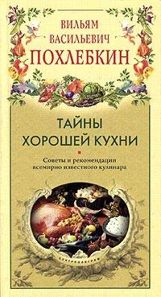

Занимательная кулинария


"« Занимательная кулинария »"
А также из других источников Интернет
Уважаемый Читатель - после ознакомления с Книгой
рекомендую Вам найти и заказать ее бумажное издание.
В книге В.В. Похлебкина, международно признанного специалиста в области истории, теории и практики кулинарного искусства, рассказывается о необычных способах готовки и удивительных свойствах известных продуктов, об удобном устройстве домашней кухни и очага для приготовления пищи, о сущности процессов, происходящих во время приготовления блюд. Воспользуйтесь советами знаменитого кулинара и Вы получите истинное удовольствие при готовке и новые вкусовые ощущения от привычных блюд!
Примечание : Эта и другие книги Вильяма Похлебкина были написаны в "совковый" период и частично несут в себе некоторые "совковые" идеологизмы.Но это совершенно не умаляет познавательную ценность его книг ... Познавательны цыфры и статистика, приведенные автором ...

"« Тайны хорошей кухни »"
А также из других источников Интернет
Уважаемый Читатель - после ознакомления с Книгой
рекомендую Вам найти и заказать ее бумажное издание.
Эта книга не сборник рецептов, а увлекательный рассказ о профессии, которой должен владеть каждый. Читатели узнают о различных видах приготовления пищи, больших и малых секретах кулинарного искусства, найдут практические советы. Все это поможет молодым семьям не только вкусно и быстро готовить, но и получать удовольствие от этого процесса.